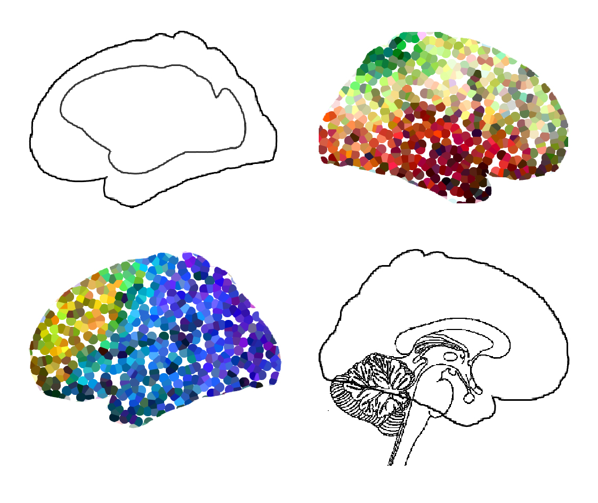

|

How can the brain be stable yet flexible? We are interested in describing large-scale organisational axes of the human cortex to understand how structuress. For example, we wish to understand how structure and function (co)vary along such axes. By uncovering the gradients along which Paper x How has the human brain evolved?
We are interested to describe large-scale organisational axes of the human cortex. For example, we wish to understand how structure and function (co)vary along such axes. By uncovering the gradients along which
|